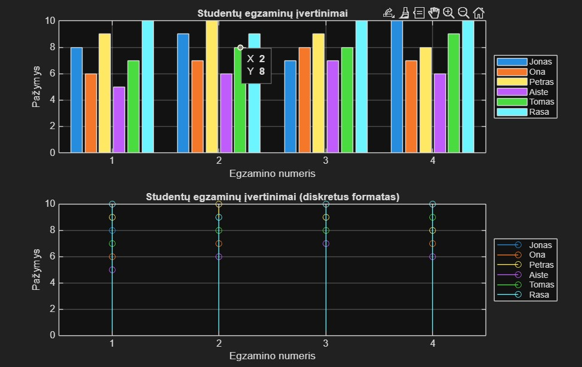
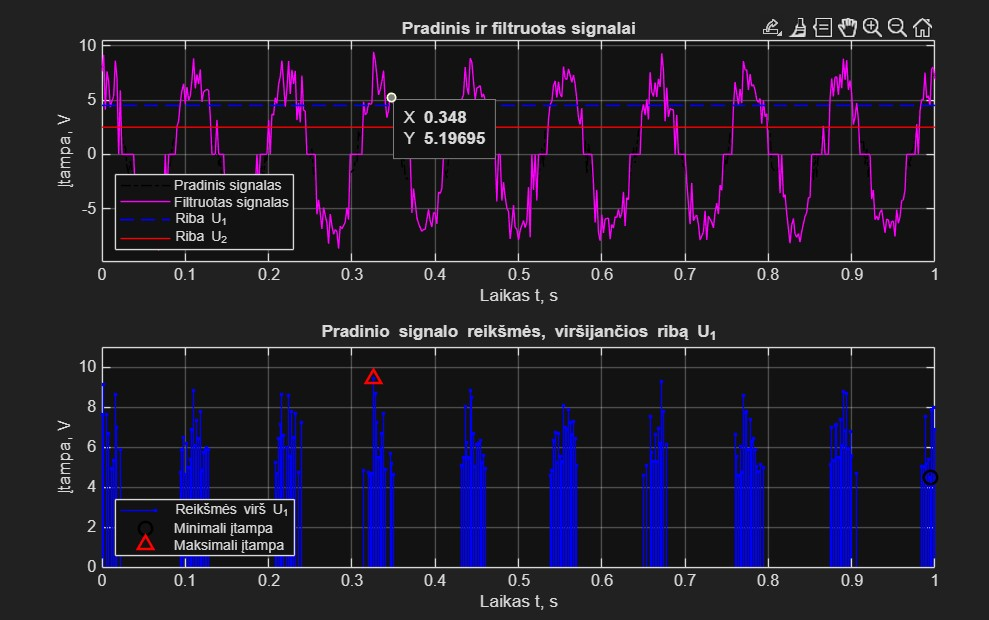
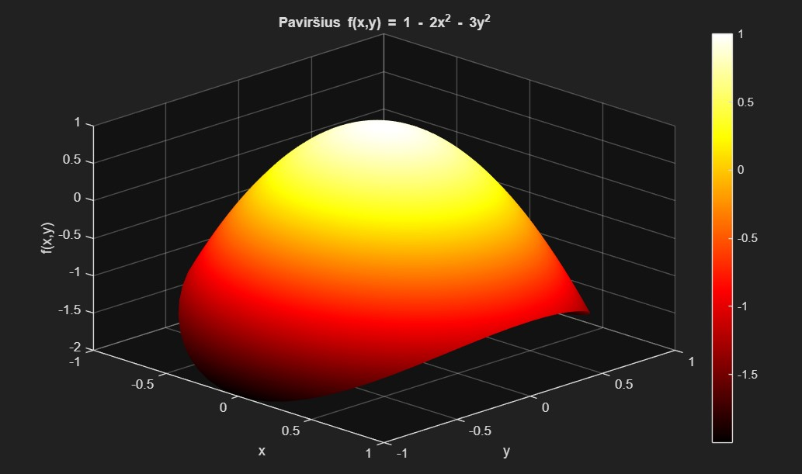

Studentų egzaminų įvertinimai
MATLAB 3 LD. Šešių studentų keturių egzaminų rezultatų palyginimas stulpeline diagrama.
Aš esu Programuotojas

Kuriu modernias, patogias naudoti ir prieinamas svetaines, kurios sklandžiai veikia visuose įrenginiuose.
Esu informacinių technologijų studentas, besidomintis žiniatinklio kūrimu. Stengiuosi rašyti tvarkingą kodą ir nuolat mokausi naujų technologijų. Laisvalaikiu kuriu asmeninius projektus ir seku dizaino tendencijas.
Technologijos ir įrankiai, kuriuos naudoju mokomuosiuose projektuose.
Mano išsilavinimas ir praktinė patirtis.
VILNIUS TECH, Vilnius
Studijuoju programavimą, informacines technologijas ir duomenų analizę.
Mokomieji projektai
Kūriau interneto svetaines naudodamas HTML, CSS ir JavaScript technologijas.
Universiteto laboratoriniai darbai
Analizavau duomenis, kūriau grafikus ir atlikau klasifikavimo užduotis.
Mano MATLAB 3 ir 4 laboratorinių darbų grafikai.

MATLAB 3 LD. Šešių studentų keturių egzaminų rezultatų palyginimas stulpeline diagrama.

MATLAB 3 LD. Pradinio ir filtruoto signalų palyginimas ir įtampos ribų analizė.

MATLAB 4 LD. Funkcijos f(x,y) = 1 - 2x² - 3y² trimačio paviršiaus atvaizdavimas.
IT paslaugų pavyzdžiai, naudojami mokomajame CV.
| Paslauga | Aprašymas | Kaina |
|---|---|---|
| Tinklalapių kūrimas | Asmeninių svetainių kūrimas | 100 Eur |
| Svetainių dizainas | Svetainės išvaizdos atnaujinimas | 50 Eur |
| Duomenų vizualizacija | Grafikų kūrimas naudojant MATLAB | 40 Eur |
Mokomieji projektai ir atlikti darbai.
Mano programavimo projektus galite peržiūrėti GitHub platformoje.
GitHub profilis